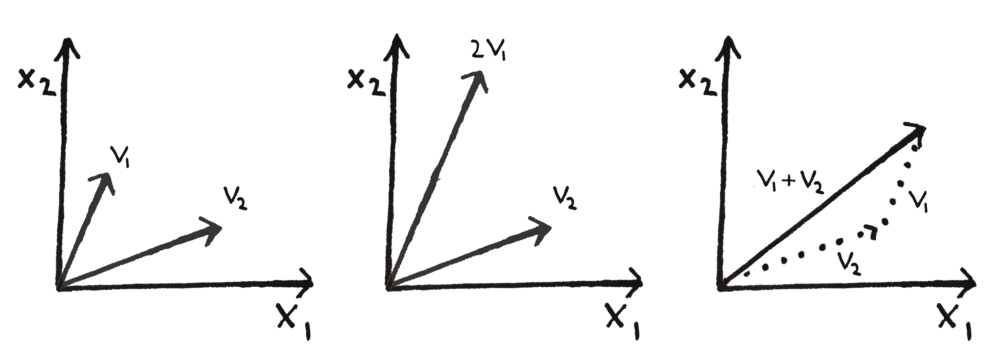

Matrices and Partial Derivatives
Intro
I wanted to take the time and explain the absolute basics of linear algebra and multivariable calculus, making as few assumptions about prior knowledge as possible.
Algebra
A $function$ is a relation between a set of inputs and outputs. Each input has a unique output. You've probably seen functions before. $f(x) = x + 2$ is an example of a function. There are a few ways of thinking about functions, however, that you may not have been exposed to.
A function can be thought of as a $mapping$ of inputs to outputs. In this way, a function $f$ is written as
\[ f: X \rightarrow Y \]
$f$ maps elements $x \in X$ (the $\in$ means "in") to $y \in Y$. The set of possible inputs (in this case, $X$) is the $domain$ of $f$ and the possible outputs ($Y$) is the $range$ of $f$.
We are used to functions of the form $f: \mathbb{R} \rightarrow \mathbb{R}$ (functions that map real numbers to real numbers). However, functions can be abstracted to represent almost any kind of mapping. We will be especially interested in functions of the form $f: \mathbb{R} \rightarrow A$ where $A$ is a set of classifications or labels.

Linear Algebra
Linear algebra is the mathematics of matrices and vectors. This makes it appropriate for dealing with large systems of equations, something you encounter frequently during any exploration of machine learning.
A $matrix$ is a 2-D array of numbers. Matrices are referred to with bold upper-case letters. The $height$ of a matrix is the number of rows in it and the $width$ of a matrix is the number of columns. The elements of a matrix have two indices. The first is the row index and the second is the column index. The size of a matrix ${\bf A}$ is denoted $\vert{\bf A}\vert$. Below is a matrix with height 3, length 2, and size 6. We may also refer to this matrix as a ``3 by 2" matrix.
\[
{\bf A} = \begin{bmatrix}
a_{11} & a_{12} \\
a_{21} & a_{22} \\
a_{31} & a_{32}
\end{bmatrix}
\]
There are two operations on matrices that you should know:
- The $transpose$ of a matrix is a new matrix whose rows are the columns of the original. The transpose of a matrix ${\bf A}$ is denoted ${\bf A}^{T}$.
\[
{\bf A} = \begin{bmatrix}
a_{11} & a_{12} \\
a_{21} & a_{22} \\
a_{31} & a_{32}
\end{bmatrix}
{\bf A}^{T} = \begin{bmatrix}
a_{11} & a_{21} & a_{31} \\
a_{12} & a_{22} & a_{32}
\end{bmatrix}
\]
- $Matrix\ multiplication$ is done in a row-by-column fashion. The rows of the multiplicand are combined with the columns of the multiplier:
\[
{\bf A} {\bf B}=
\begin{bmatrix}
a_{11} & a_{12} \\
a_{21} & a_{22} \\
a_{31} & a_{32}
\end{bmatrix}
\begin{bmatrix}
b_{11} & b_{12} & b_{13}\\
b_{21} & b_{22} & b_{23}
\end{bmatrix}
=
\begin{bmatrix}
a_{11} b_{11} + a_{12} b_{21} & a_{11} b_{12} + a_{12} b_{22} & a_{11} b_{13} + a_{12} b_{23} \\
a_{21} b_{11} + a_{22} b_{21} & a_{21} b_{12} + a_{22} b_{22} & a_{21} b_{13} + a_{22} b_{23}\\
a_{31} b_{11} + a_{32} b_{21} & a_{31} b_{12} + a_{32} b_{22} & a_{31} b_{13} + a_{32} b_{23}\\
\end{bmatrix}
\]
Higher dimensional arrays of numbers are called $tensors$. These have the same properties and notation as matrices, so we will refer to them simply as matrices for the rest of this book.
A $vector$ is a 1-D array of numbers that is signified by a bold lower-case letter. Each element in a vector is known as an $attribute$, and can be identified by its index. A vector can also be thought of as a single column of a matrix. This means that vectors share many properties with matrices, like multiplication:
\[
{\bf x}^{T} {\bf v} =
\begin{bmatrix}
x_1 & x_2 & \cdot \cdot \cdot & x_n
\end{bmatrix}
\begin{bmatrix}
v_1 \\ v_2 \\ \cdot \cdot \cdot \\ v_n
\end{bmatrix}
=
\sum_{i = 1}^n x_i v_i
\]
An invaluable property of vectors is their spatial interpretation. A vector can be placed into a coordinate system. In this interpretation, each vector can be visualized as an arrow pointing from the origin to whatever point is specified by the vector's elements. The number of dimensions a vector exists in is equal to its size (the number of attributes).

This shows a vector-space visualization of two vectors ${\bf v_1}$ and ${\bf v_2}$.
Vectors can be added to each other (if they are the same dimension) and multiplied by $scalars$, or numbers. Adding two vectors is akin to attaching two arrows to each other in our coordinate system, while multiplying a vector by a number $x$ is equivalent to scaling the arrow by $x$.

Vectors can be scaled (middle) or summed (right).
Multivariable Calculus
The $derivative$ of a function $f(x)$ measures the slope of the line tangent to $f$. It is written $\frac{df}{dx}$ or $f'(x)$ because you are taking the derivative of $f$ $with\ respect\ to\ x$.

A pointwise derivative of a function $f$ at a location $x$.
Many functions take several inputs. Some functions can even take a vector or matrix as input. If this is the case and we want to see how the function depends on one of its many inputs, we can take a $partial\ derivative$. If $f$ takes many inputs such that $f(x_1, x_2, ..., x_n) = \cdot \cdot\cdot$, then we say that $\frac{\partial f}{\partial x_i}$ is the derivative of $f$ $with\ respect\ to\ x_i$.

Partial derivatives of a function $f$ with respect to each of its inputs $x_1$ and $x_2$.
The derivative of a vector produces a special matrix called the $Jacobian$. If $f$ is a function such that $f: \mathbb{R}^n \rightarrow \mathbb{R}^m$ ($f$ takes vectors of length $n$ as input and produces vectors of length $m$ as output), then the Jacobian of $f$ (denoted ${\bf J}$) is a matrix with $m$ rows and $n$ columns, where $j_{ij} = \frac{\partial f_i}{\partial x_j}$.